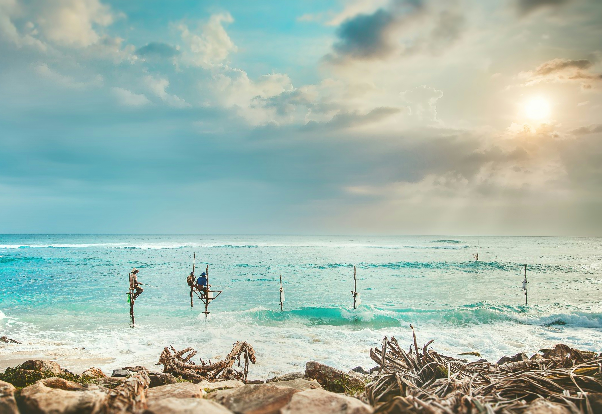
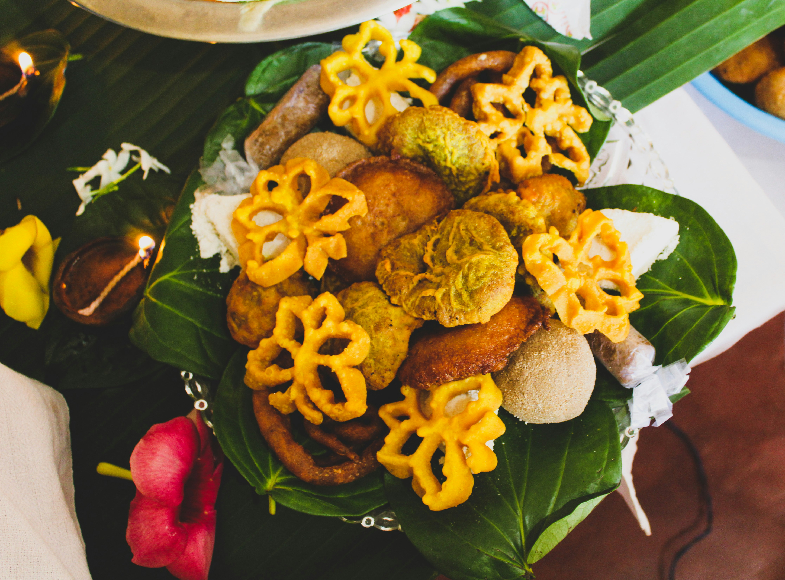
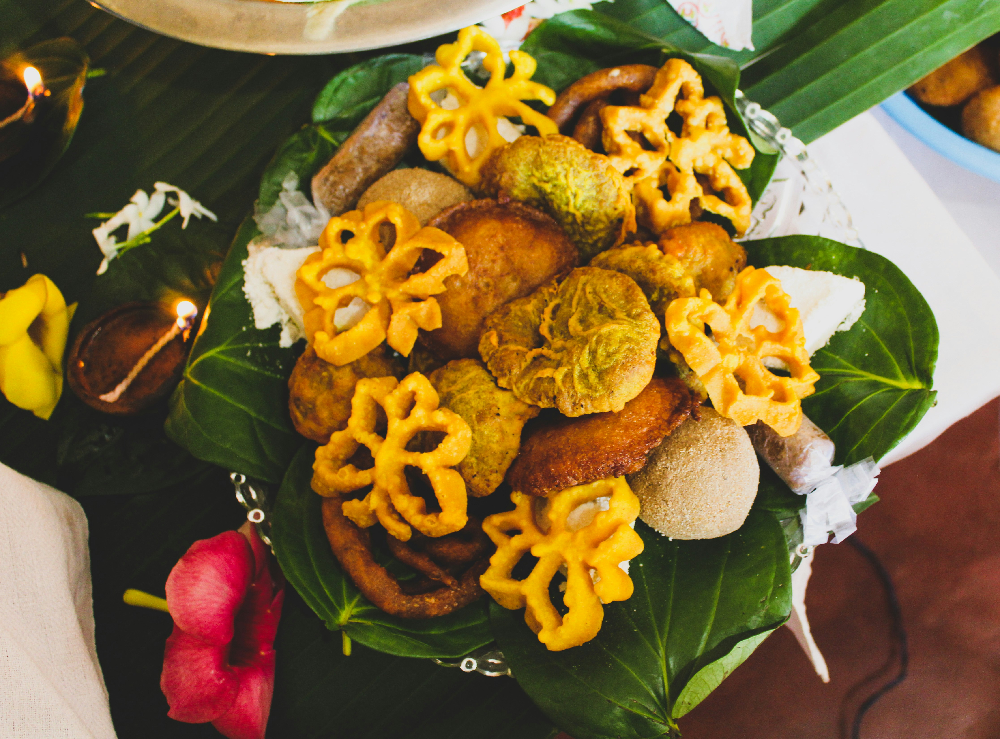

Top Destinations
人気の観光地

Sigiriya Rock Fortress
シーギリヤ・ロック要塞
Known as the “Lion Rock”, famous for ancient frescoes, gardens, and breathtaking views at the top.
「ライオンロック」として知られ、古代の壁画や庭園、頂上からの絶景で有名です。

Ella & Nine Arch Bridge
エッラ＆ナインアーチブリッジ
A cool mountain village surrounded by tea estates, hiking trails, and the iconic Nine Arch Bridge.
紅茶畑やハイキングコースに囲まれた涼しい山の村で、有名なナインアーチブリッジがあります。

Mirissa Beach
Mirissa Beach
ミリッサビーチ
Perfect for whale watching, surfing, sunsets, and relaxing under coconut palms.
ホエールウォッチング、サーフィン、夕日鑑賞、ヤシの木の下でのんびりするのに最適です。


 
